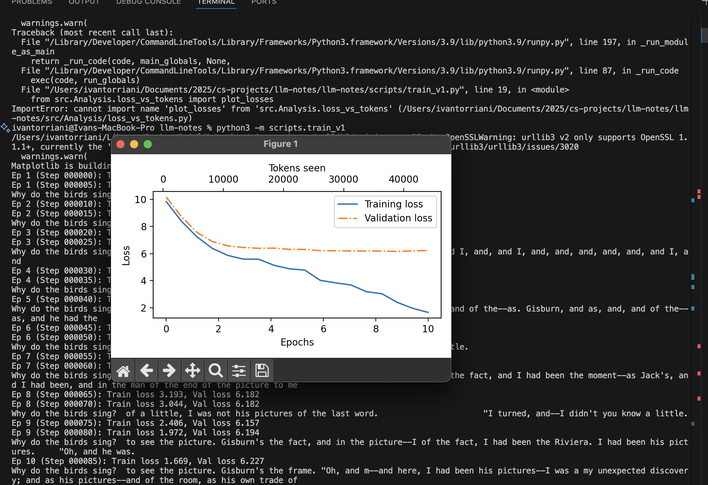
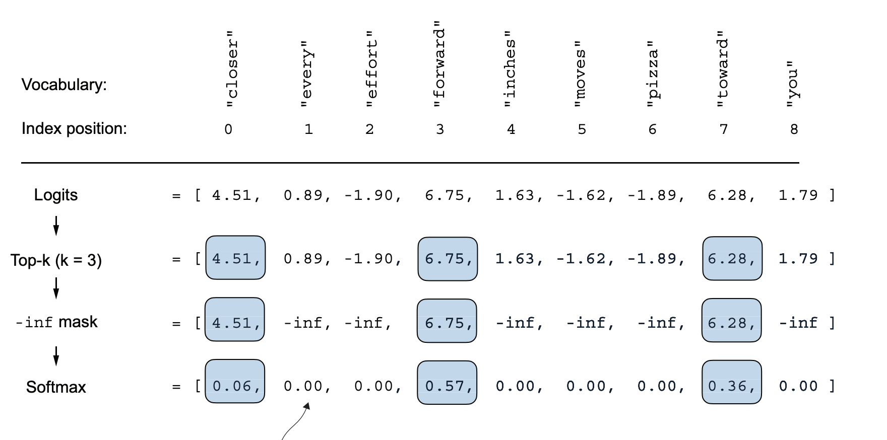

Integration, Experimentation, Temperature, Top K
August 10, 2025
Today I mainly focused on integration. I had a lot of the functions, classes, and other functionality organized in the colab but everything is now up to date in the repository with all the important functionalities. I used the notes to write the first training script with 10 epochs and here is the result below. On that note, however, we are using a lot of pre-defined user designed variables for epochs, context length, etc... These can definitely be experimented with to see what produces the best results, and we can analyze that through the graphs as we see below. However, for now, what we have is working and as you can see at least the training batch has losses approaching 0.

However, let's take a closer look at the outputs. Notice how we have very strange language,
and that is because it was directly trained on the Edith Wharton Verdict book, which is an old book.
However, the issue is that our model is overfitting, that is, the model is relying on memorization
to reproduce sentences. This comes down to two main reasons. The first is that we are training it
on one short story, so there is not much training data to begin with. Another factor is that we are currently using
the arguent argmax in order to choose our nexxt token from the logits. In other words, the next word
that will be generated will always be the same word. To see the problem, take the sentence (unfinished): "The dog and the ".
The next likely word is "cat", obviously. However, in real conversation, although it is most probable that we woudl finish the sentence
with cat, there IS a probabiltiy that we could finish the sentence with "hamster". However, when we use argmax, our model would
always ignore that possiblity because dog is much more likely than hamster. This brings up the concepts of temperature and top k's.
Temperature basically refers to one simpe equation and that is $$logits \leftarrow \frac{logits}{T}$$.
In other words, logits is reassigned to itself divided by T, or temperature. Recall that logits, the one we desire,
refer to a row of probabilites. If we divide the entire row by a very small number, what happens is that the existing values
get farther apart. In other words, the differnces in probability becomes so great that one word is much more likely to be chosen than the ohter.
We would set T, temperature, to be low if we wanted the outputs to be basically copied from the training data.
If T is larger, however, the data becomes more uniform, leading to probabilties being roughly distributed. This leads to
many differnet tokens having chances of being chosen. This comes down to the multinomial torch function, too, which
helps in this process. If we return to the original example we discussed, this would give the word 'hamster' a chance to be selected.
It also, from experience, seems to make the text generation sound a lot better.
Temperature was one way to make text generation less uniform and strict to the training data. Another concept is Top K. It's pretty simple; we mask all probabilities except for the top k, by user design, and use multinomial to choose. between those values. This again makes text generation less strict. Here's a photo

Tomorrow, the next bunch of material is loading in pretrained weights from the internet. However, I don't want to do that just yet. I would like to train it on my own dataset, still probably pretty small, maybe a couple gigs. I definitely recognize the value of loading in pretrained weights... i don't have to do expensive operations on my own computer. But I think it's more useful to have a more realistic training experience where I am training the data on larger datasets.